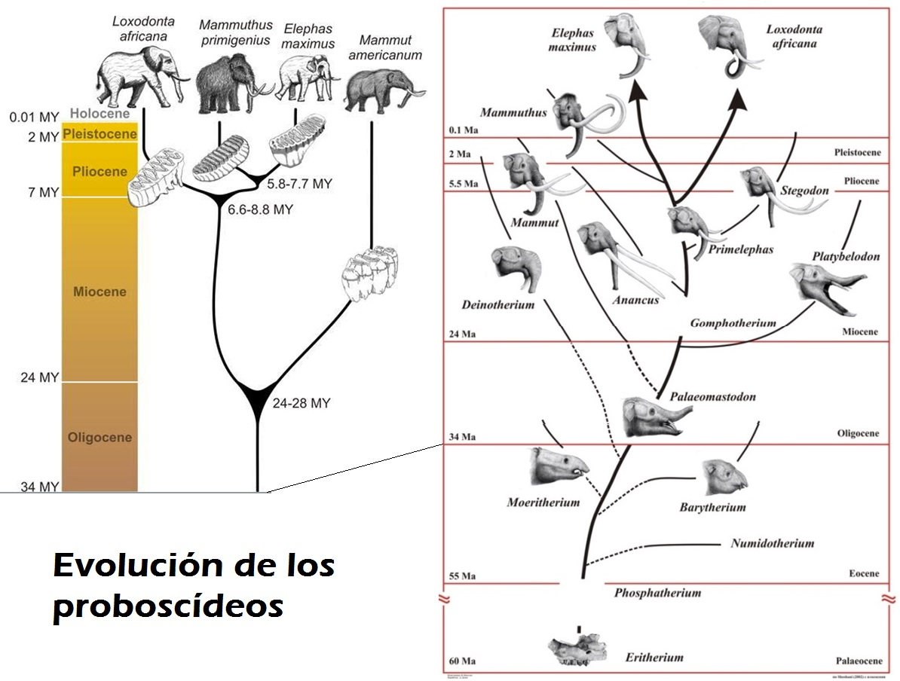
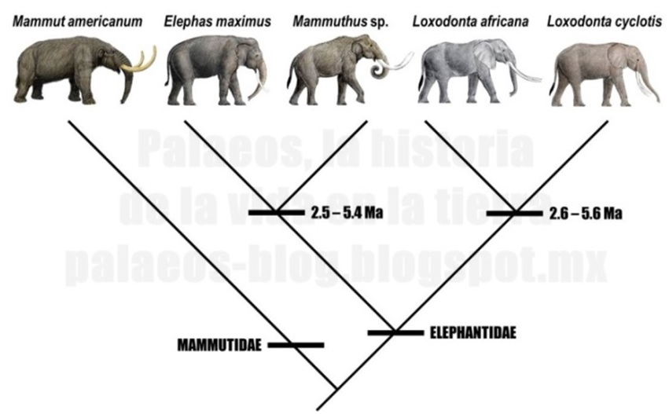

Mamuts, elefantes y ADN - Unidad 7
Mamuts, elefantes y ADN

Los mamuts despiertan en muchas personas sensaciones de admiración. Estos gigantes de la era de hielo vivieron hasta hace 5.700 años, y a diferencia de los dinosaurios no avianos, los seres humanos si convivimos con estos colosos.
En términos más estrictos la palabra mamut engloba a por lo menos doce especies diferentes de animales y no todas fueron enormes. Hubo especies pequeñas de mamuts, como el mamut pigmeo (Mammuthus exilis), que tenía solo 1,72 de altura, y algunas habitaron en África en donde no hubo nieve (Mammuthus africanavus).
No obstante, cuando se habla de mamuts la mayor parte de las personas recuerdan la película “La era de hielo” y a su protagonista Manny, un mamut malhumarado. Manny seguramente era, o bien un mamut colombino Mammuthus columbi, o bien un mamut lanudo Mammuthus primigenius. Esto porque en la película se muestra coexistiendo con humanos y estas dos especies lo hicieron.
Un mamut de verdad es Lyuba, pero a diferencia de Manny, Lyuba solo tenía un mes de vida cuando murió. Lyuba pertenece a la especie de mamut lanudo o mamut de la tundra (Mammuthus primigenius). En algún momento de su corta vida Lyuba se separó de su madre e infortunadamente cayó en un pantano en el que rápidamente se hundió ahogándose. Allí permanecería por 37.000 años, y como las temperaturas allí son extremadamente bajas, su cuerpo permaneció congelado. En el año 2007, un pastor de renos encontró a Lyuba.
Inicialmente el pastor creía que había hallado un reno, pero al sacarla notó la inconfundible trompa que caracteriza a la familia Elephantidae. El cuerpo de Lyuba conserva los ojos y la trompa intactos. También sus órganos internos están todos conservados, el corazón tiene distinguidos todos sus ventrículos, así como el hígado y las venas. Es hasta la fecha el ejemplar de mamut mejor conservado. Al morir Lyuba tenía 50 kilogramos de masa y una altura de 1,30 m.

Precisamente el excelente estado de conservación de Lyuba ha planteado la posibilidad de extraer ADN de este ejemplar, ponerlo en un óvulo e implantarlo en el útero de una elefanta para poder volver a revivir a los mamuts. En diciembre de 2008 un equipo de científicos logró descifrar las secuencias del ADN de un mamut lanudo.
Suponiendo que pudiera encontrarse el material genético de un mamut completo, cosa que es muy difícil, se podría volver a traer a la vida un mamut de nuevo. La razón para que esto pudiese ocurrir es que el ADN es una molécula que guarda las instrucciones para hacer proteínas, tiene las instrucciones de que órganos hacer, dónde ponerlos, que tamaño debe tener un organismo, como debe funcionar. En últimas el ADN son los planos para hacer un organismo, pero también su manual de instrucciones.
Desde la bacteria más pequeña hasta los gigantescos árboles de sequoya, todos los seres vivos tienen en sus células ADN, que los organiza y dirige. Las células también poseen ribosomas, que son las maquinas moleculares que leen el ARN mensajero para hacer proteínas. Si se lograra extraer ADN intacto de un mamut este crearía en una célula viva ARN mensajero y los ribosomas harían las proteínas de un mamut.

Mucho más atrás que Lyuba, que los dinosaurios o aún que las primeras bacterias, apareció una molécula capaz de replicarse, de hacer copias de sí misma. Y en ese maravilloso evento químico está la base del origen de la vida, de nosotros mismos. Precisamente por eso es que todos los seres vivos comparten el ADN como molécula de la vida, porque todas las especies comparten un origen único y antiguo.
El ADN se duplica en las células antes de que estas de dividan. Esto ocurre, en las células eucariotas, en la fase S de la interfase. Luego, en la mitosis, cada célula recibe una copia exacta de cromosomas. Pero no siempre las copias son exactas. A veces, cuando el ADN se está replicando cambia “letras” de las bases nitrogenadas. Los cambios en los nucleótidos en una secuencia de ADN se conocen como mutaciones. ¡Olvídense que las mutaciones son los monstruos del cine! Mutación es solo un cambio en la secuencia del ADN, y las mutaciones son muy interesantes porque generan diversidad y sobre esa diversidad actúa la selección natural permitiendo la evolución.
En otras palabras, la evolución también es posible gracias al ADN. Recordemos que un fragmento de ADN que guarda información mínimo para hacer una proteína es un GEN. Pues bien, los genes mutan, eso genera diversidad (organismos más grandes o más chicos, más o menos peludos, etc.); luego sobre esta diversidad actúa la naturaleza y esto hace que unas variedades sobrevivan y otras no. Las que sobreviven dejan más hijos, y con estos hijos van sus genes. Así, de cambio en cambio en el ADN (mutaciones), y con la selección natural las especies han cambiado. En otras palabras han evolucionado. Se puede decir que la evolución es el cambio en la estructura genética de una población después de muchas generaciones.

Los antepasados de los mamuts (género Mammuthus) se originaron en regiones más cálidos y luego migraron hacia Europa, el norte de Asia y Norteamérica. Pero a medida que el clima se hacía más frio los antepasados de los mamuts se hicieron más peludos y sus orejas más chicas. Unas orejas grandes tienen una gran superficie en la que se puede perder calor. Por eso las orejas de los mamuts eran más pequeñas que las de los elefantes. Este cambio se dio gracias a que en el ADN de los antepasados de los mamuts (así como en el de todos los organismos) ocurren mutaciones. Cuando aparecía una mutación que generaba un gen hacía que una cría naciera con pelo algo más largo o más grueso, este cambio era favorecido por la naturaleza. Este animal tenía más probabilidades de sobrevivir que sus compañeros. Al dejar descendencia este gen mutante se empezaba a extender. Lo mismo ocurrió con los genes que determinaban el tamaño de las orejas, el espesor del esmalte en los dientes, la grasa subcutánea etcétera.
Este proceso en el que se da una supervivencia y reproducción diferencial entre genotipos diferentes, o hasta en genes diferentes se conoce como selección natural [Un genotipo es un grupo de organismos que comparten un conjunto genético específico]. La selección natural es responsable de las adaptaciones de los organismos. Este mecanismo fue descrito por Charles Darwin y Alfred Wallace a mediados del siglo XIX.

Este par de naturalistas notaron que los organismos tienen una gran capacidad potencialidad de fertilidad, pero no obstante las poblaciones naturales permanecen estables. Notaron también que existe una gran lucha en la naturaleza por los recursos, los cuales son limitados, tales como fuentes de alimentos, agua, pareja, territorio, en el caso de las plantas, luz y nutrientes, etc. Esto les llevó a la conclusión que existe entre los organismos una lucha por la supervivencia.
Darwin notó que entre los organismos de una población hay diferencias fenotípicas entre ellos. Es decir, las poblaciones no son un conjunto de clones. Y también se dio cuenta que la variación es heredable. Estas observaciones lo llevaron a concluir que entre los organismos se da una reproducción diferencial, es decir que unos se reproducen y otros no. La diferencia en la reproducción puede deberse a la manera como esos fenotipos responden frente al ambiente. Así pues, durante muchas generaciones el ambiente permite la supervivencia y reproducción de unos organismos, con el tiempo esto explica el origen de las adaptaciones y de nuevas especies.
El naturalista británico dejó claro que la selección natural no es el origen de la diversidad biológica. Hoy sabemos que ese papel lo juega la mutación. “Varios autores han entendido mal o puesto reparos al término selección natural. Algunos han imaginado que la selección produce la variabilidad, siendo así que implica solamente la conservación de las variaciones que surgen y son beneficiosas al ser en sus condiciones de vida”.
“La selección natural actúa solamente mediante la conservación y acumulación de pequeñas modificaciones heredadas, todas ellas para el ser conservado”. Añadía posteriormente.

La selección natural no es un proceso que se dio en el pasado. Esta se está dando en todo momento. En los elefantes africanos, la selección natural hacía que los ejemplares de mayor tamaño y con mayores colmillos fueran los más exitosos, poderosos y los más atractivos para las hembras. Por lo tanto los elefantes con colmillos más grandes (y los genes para colmillos grandes) tenían más posibilidad de procrear y de engendrar una descendencia con unos colmillos más grandes. Pero, con la llegada del hombre moderno las cosas se pudieron feas para los elefantes. La caza de los elefantes por sus colmillos, que son usados como trofeos, o para hacer objetos de marfil ha creado un problema a los elefantes. Ahora tener grandes colmillos es desventajoso. Pero en la población de elefantes hay algunos organismos que tienen colmillos pequeños o que no tienen colmillos. Como esta característica es heredable, es decir se debe a los genes, la selección natural ahora favorece a los elefantes con colmillos pequeños o sin colmillos. Estos simplemente no son tractivos a los cazadores humanos y logran sobrevivir. Por eso ahora la proporción de elefantes sin colmillos (y de genes para no tener colmillos) es mayor en la población. Es decir, ha ocurrido un cambio en la estructura genética de la población al pasar el tiempo, o en otras palabras ha ocurrido evolución biológica.
La evolución por selección natural no solo actúa en los elefantes, de hecho forjó a los seres humanos y las demás especies del planeta.
El ADN que forma los genes se ha convertido también en una poderosa evidencia que atestigua la evolución, y de cómo están emparentadas las especies. En 2005 se realizó un análisis de ADN mitocondrial en el que se compararon las secuencias de genes del elefante africano (Loxodonta africana), el elefante asiático (Elephas maximus) y Mamut (Mammuthus primigenius). Este análisis demostró que los mamuts están más estrechamente emparentados con los elefantes asiáticos que con los africanos.
Así pues el ADN son los planos para hacer los organismos, y a medida que estos planos han cambiado por la mutación, y seleccionados por la naturaleza, una gran variedad de especies han aparecido en este bello planeta.

Enlaces de interés
Selección de grupo y altruismo: el origen del debate http://www.scielo.br/scielo.php?pid=S1678-31662009000300005&script=sci_arttext
Selección sexual: http://www.sesbe.org/sites/sesbe.org/files/recursos-sesbe/Sex_selection.pdf
Bibliografía
Campbell, N (1990). Biology. Second edition, Benjamin/Cummings.
Curtis, H., Barnes, S. (1989). Biology, Fifth edition, Worth Publishers.
Darwin, C. (1859). El origen de las Especies, Madrid, Ediciones EDAF.
Dawkins, R. (2009). Evolución: El mayor espectáculo sobre la Tierra. Espasa Libros
Hickman, C., Roberts, L, y Parson A. (1998). Principios integrales de zoología. Décima edición. Buenos Aires. McGraw-Hill-Interamericana.
Sadava, D. et al (2009). Vida. La ciencia de Biología. Buenos Aires, Argentina, Editorial Médica Panamericana.
Wallace, A.R.(1858). Sobre la tendencia de las variedades para alejarse indefinidamente del tipo original. Recuperado de: http://www.revista.inecc.gob.mx/article/view/131
Créditos de fotografías
Enlaces de interés:
Selección Natural https://evovagario.wordpress.com/evolucion/mecanismos/seleccion-natural/
¿Qué es la selección natural y cómo es ella central a la teoría de la evolución? http://www.sindioses.org/cienciaorigenes/douglasfutuyma.html
La selección natural: “Me replico, luego existo” http://bioinformatica.uab.es/divulgacio/lasn/
BIBLIOGRAFÍA:
Campbell, N (1990). Biology. Second edition, Benjamin/Cummings.
Curtis, H., Barnes, S. (1989). Biology, Fifth edition, Worth Publishers.
Darwin, C. (1859). El origen de las Especies, Madrid, Ediciones EDAF.
Hickman, C., Roberts, L, y Parson A. (1998). Principios integrales de zoología. Décima edición. Buenos Aires. McGraw-Hill-Interamericana.
Sadava, D. et al (2009). Vida. La ciencia de Biología. Buenos Aires, Argentina, Editorial Médica Panamericana.
Wallace, A.R.(1858). Sobre la tendencia de las variedades para alejarse indefinidamente del tipo original. Recuperado de: http://www.revista.inecc.gob.mx/article/view/131
Comentarios
Comments powered by Disqus